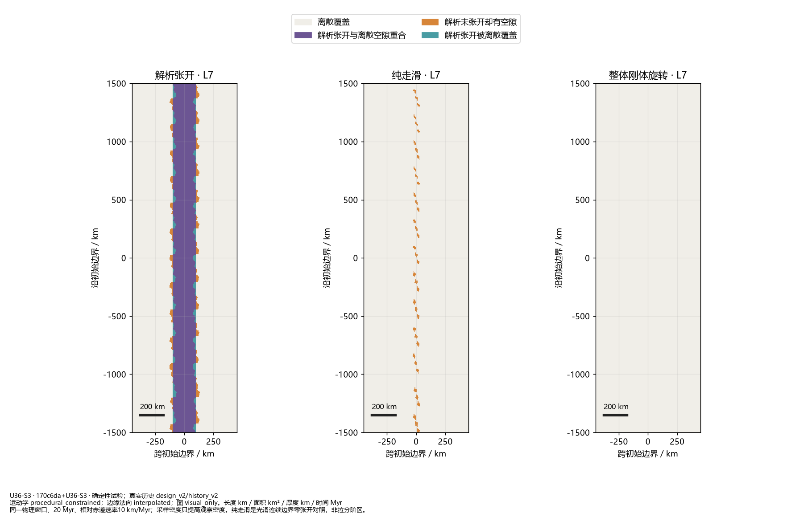
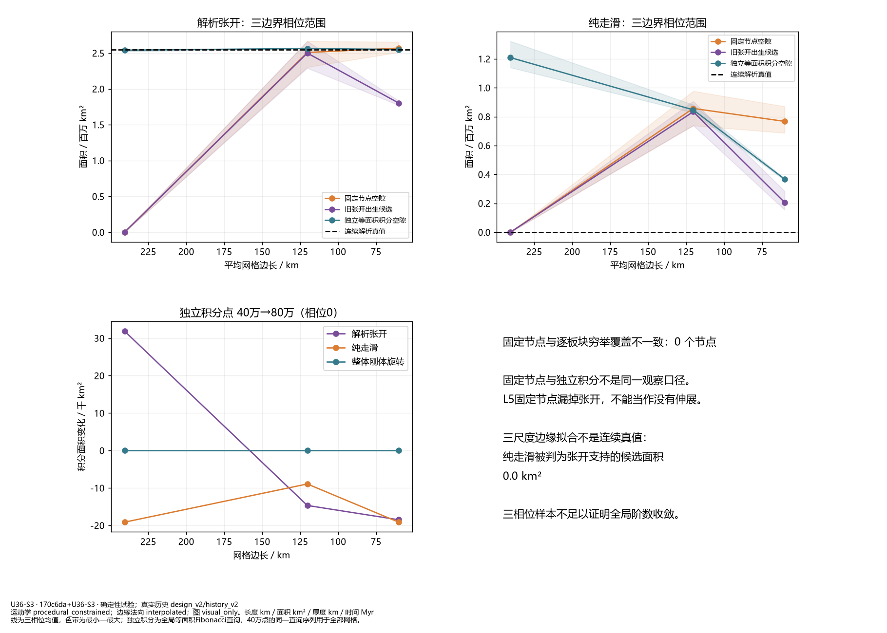
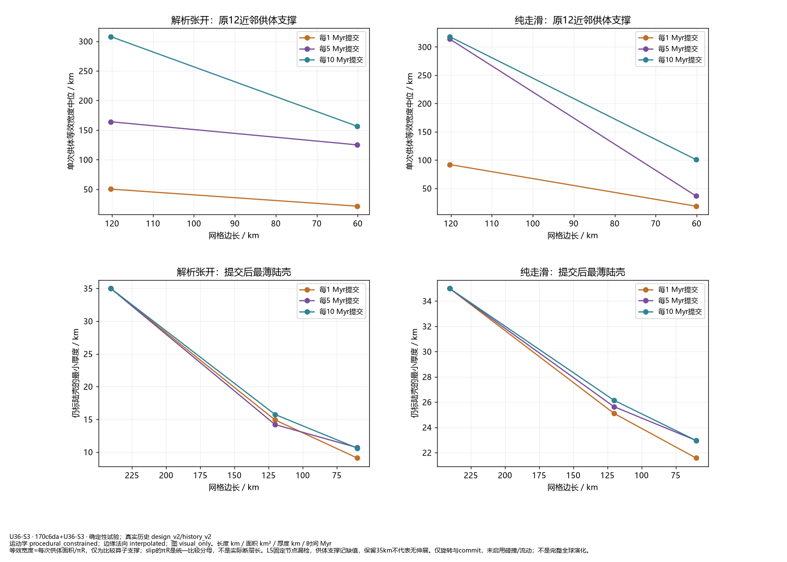
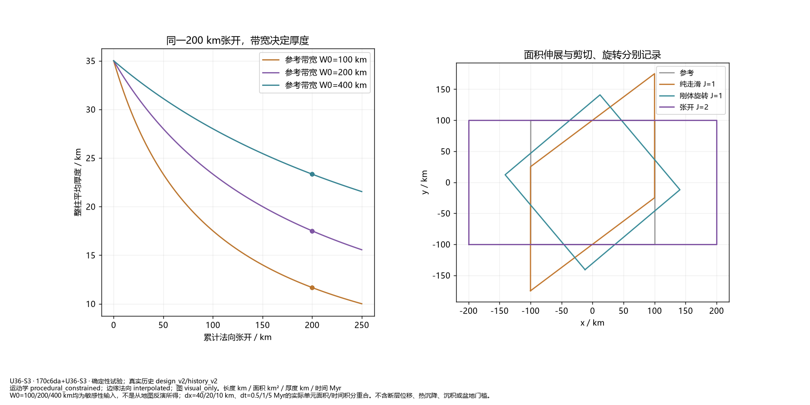
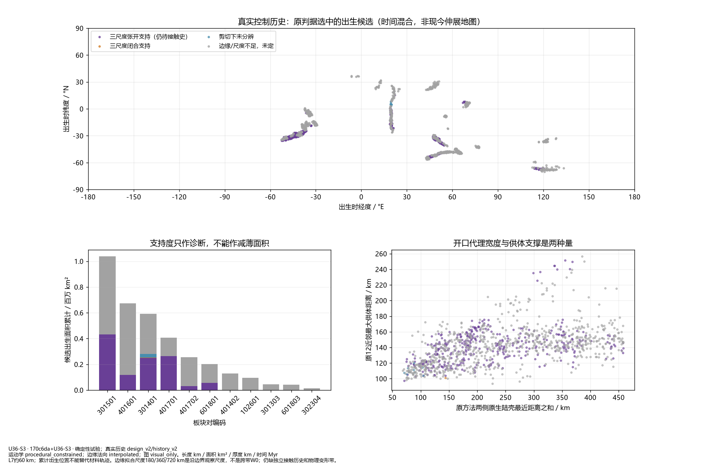

专项验证；真实历史只读观测。三尺度支持不是实际伸展真值，W0尚未由独立几何给定；未接入B5沉降，默认仍C2。
同一物理窗口、20 Myr、相对赤道速率10 km/Myr；采样密度只提高观察密度。纯走滑是光滑连续边界零张开对照，非拉分阶区。

线为三相位均值，色带为最小—最大；独立积分为全局等面积Fibonacci查询，40万点的同一查询序列用于全部网格。

等效宽度=每次供体面积/πR，仅为比较算子支撑；slip的πR是统一比较分母，不是实际断层长。L5固定节点漏检，供体支撑记缺值，保留35km不代表无伸展。仅旋转与commit，未启用碰撞/流动；不是完整全球演化。

W0=100/200/400 km均为敏感性输入，不是从地图反演所得；dx=40/20/10 km、dt=0.5/1/5 Myr的实际单元面积/时间积分重合。不含断层位移、热沉降、沉积或盆地门槛。

L7约60 km；累计出生位置不能替代材料轨迹。边缘拟合尺度180/360/720 km是沿边界观察尺度，不是跨带W0；仍缺独立接触历史和物理变形带。
